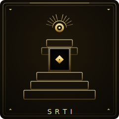

SRTI • Disperso / Reactivo / Tech-driven / Integrado

SRTI: Éxito Accidental
"Funciona, pero no sabemos por qué."
Algo está funcionando. La IA ha encontrado su camino hacia los flujos de trabajo orgánicamente, entregando valor real. Pero pasó por accidente, no por diseño. Tienes integración sin estrategia — algunos power users haciendo magia mientras el liderazgo no tiene idea de qué está pasando.
✓ Tus Fortalezas
- Fortalezas reales de IA siendo entregadas hoy
- Adopción orgánica probando que existe demanda
- Power users que entienden las herramientas
- Patrones de integración que funcionan
- Baja resistencia ya que ya está pasando
✗ Tus Puntos Ciegos
- Éxito dependiente de individuos clave
- Sin documentación ni transferencia de conocimiento
- No puedes escalar lo que no entiendes
- Riesgo cuando se van los power users
- Liderazgo ciego al uso real de IA
¿Listo para Subir de Nivel?
El AI Strategy Sprint te da un roadmap completo en solo 2 semanas.
Explorar
Otros Tipos AI-Q
SRTE
Piloto del Caos
SRTB
Pensador Idealista
SPTE
Sobre-Ingeniero
SPTB
Iniciador Ambicioso
SRTI
Éxito Accidental
SRBI
Héroe Shadow IT
SPTI
Laboratorio Rebelde
SPBI
Movimiento de Base
CRTE
Experimento Controlado
CRTB
Juego de la Espera
CPTE
Utopía Tech
CPTB
Doc de Estrategia
CRTI
Máquina Eficiente
CRBI
Mesa de Servicio
CPTI
Casi Llega
CPBI
Líder Estratégico